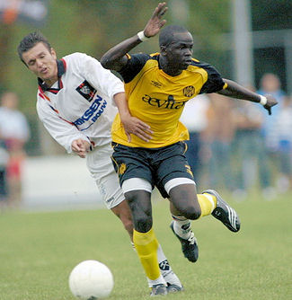

|
VV
Schaesberg - Roda JC (0-8) 14 augustus 2007
|
Roda JC heeft haar laatste
oefenwedstrijd voor de start van de competitie met 0 – 8 gewonnen bij eerste
klasser VV Schaesberg.
Raymond Atteveld begon vrijwel met zijn sterkste elftal aan de wedstrijd in
Landgraaf.

In de tweede helft werd het complete elftal gewisseld. Zo mochten er enkele
jongens van Jong Roda JC en zelfs van de A-jeugd meespelen.
0-1 Lamah (7'), 0-2 De Fauw (10'), 0-3 Lamah (25'), 0-4 Sibum
(30'), 0-5 Bouchiba (42'), 0-6 Solo (60'), 0-7 Oper (85), 0-8 Oper (89).
Opstelling Roda JC 1ste helft:
Castro, Sonkaya, Seaijs, De Fauw, Kah, Meeuwis, De Jong, Sibum, Janssen; Lamah,
Bouchiba
Opstelling Roda JC 2de helft:
Mardulier, Senden, Rompelberg, Van Kouwen, Knops, Tioté, Koubalie, Bodor; Solo,
Oper, Yulu-Matondo
Toeschouwers: 1.750
© Koempels Pleasure Dome
|
|